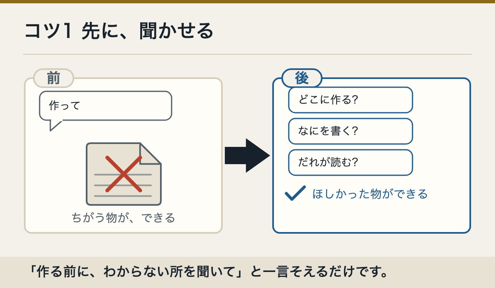
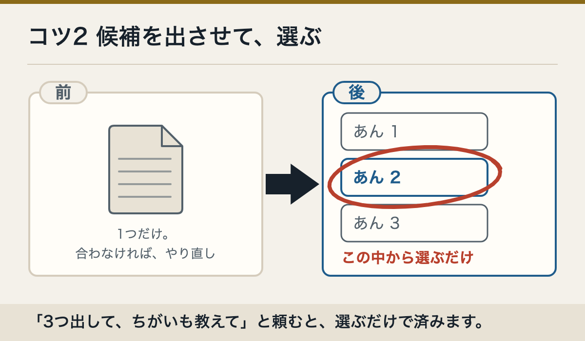
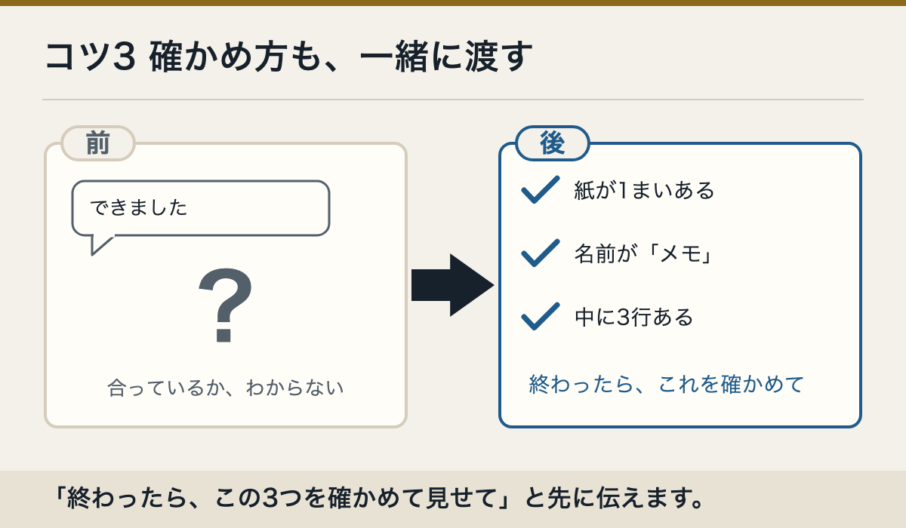

1. 先に聞いてもらう
すぐに作らず、先に私へ質問してください。分からないことがなくなったら、作る順番を見せてください。
2. 候補を出してもらい、選ぶ
まだ変えずに、よさそうな案を3つ出してください。違いを短く説明してください。
3. 自分で確かめてもらう
終わったら、自分で動かして確かめてください。できなかったことは、できたふりをせず書いてください。
うまく頼むコツ
四角の中の文は、「コピー」を押して、そのまま送れます。
すぐに作らず、先に私へ質問してください。分からないことがなくなったら、作る順番を見せてください。
まだ変えずに、よさそうな案を3つ出してください。違いを短く説明してください。
終わったら、自分で動かして確かめてください。できなかったことは、できたふりをせず書いてください。